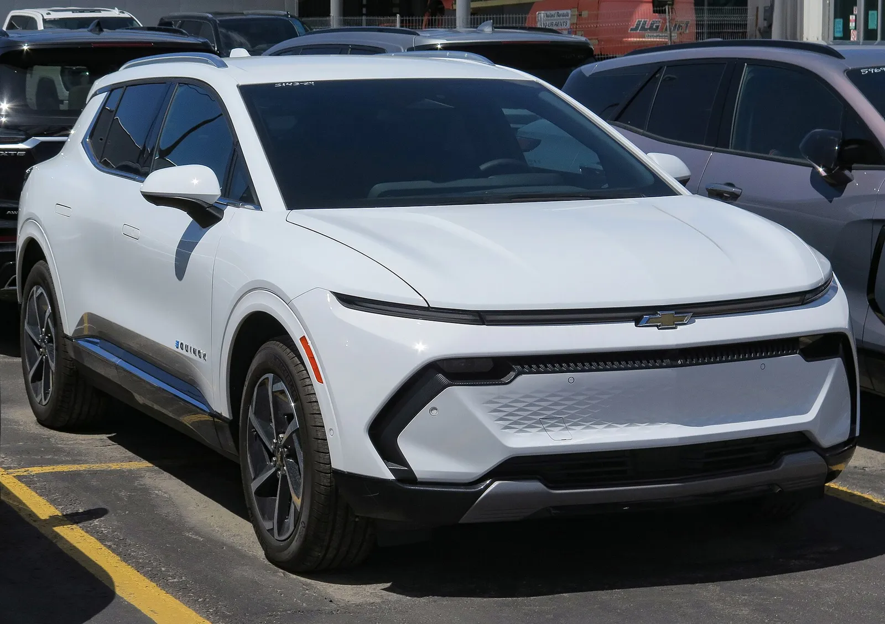
▲ 쉐보레 이쿼녹스 EV(파일 설명 기준 2024년형 2LT, 캐나다 온타리오 촬영). 3분기 1,905대로 전년 25,085대 대비 -92.4% ⓒ Elise240SX (Wikimedia Commons, CC BY-SA 4.0)
"GM 전기차 판매가 낭떠러지에서 떨어졌다." 카스쿱스의 이 제목은 사실이었다. GM이 10월 1일 공개한 3분기 미국 판매표를 직접 열어 보니 전기차는 25,473대로 전년 66,501대 대비 -61.7%였고, 같은 날 스텔란티스는 총 324,277대(전년 324,825대, -548대)로 "보합"을 발표했다. 하지만 두 회사의 공식 표를 맞춰 보면 이야기가 달라진다. GM의 총 감소분(-39,373대)은 전기차(-41,028대)만으로 설명되고 전기차를 뺀 판매는 오히려 +1,655대였다. 스텔란티스의 보합은 Ram이 +30,355대, 지프가 -32,022대로 서로 상쇄한 숫자다. 카프리즘은 두 회사의 공식 자료를 원문으로 대조해 이 구조를 계산했다.
이 글은 GM·스텔란티스 두 회사의 3분기를 공식 자료로 계산하는 데 집중한다. 같은 틀의 앞선 기사인 현대차·기아 미국 3분기 실적 기사와 포드 3분기 판매 기사의 수치를 6장 3사 비교표에서 다시 쓴다.
1. GM 3분기 670,974대 — 공식 판매표로 확인한 숫자
GM은 10월 1일 보도자료 "GM's winning portfolio continues getting stronger"에서 3분기 판매를 670,974대, 전년 대비 6% 감소로 발표하면서 원인을 "훨씬 작아진 전기차 시장과 단종 차종"이라고 적었다. 보도자료는 전기차 수치를 직접 적지 않는다. 전기차와 직접 관련된 언급은 "훨씬 작아진 전기차 시장"이라는 원인 설명과 캐딜락 항목(올해 8월까지 연초 누계 기준으로 고급 전기차 시장에서 선두를 넓혔고 1.3%포인트 성장했다는 표현)이 전부다. 대신 "가장 많이 팔리는 차종(실버라도·시에라·이쿼녹스·트래버스·트랙스)은 여러 해 성장세를 보이고 있고, 판매량이 많은 차종은 전년 수준"이라고 설명했다. 모델별 숫자는 첨부된 판매표 PDF에서 확인된다. 판매 일수는 올해와 작년 모두 77일로 같아서 일수 효과는 없다.
| 브랜드 | 3분기 2026 | 3분기 2025 | 증감률 | 1~9월 증감률 |
|---|---|---|---|---|
| 쉐보레 | 437,321대 | 458,189대 | -4.6% | -5.5%(1,304,746대) |
| GMC | 157,103대 | 164,853대 | -4.7% | -1.8%(472,259대) |
| 뷰익 | 43,990대 | 40,780대 | +7.9% | -13.4%(135,811대) |
| 캐딜락 | 32,560대 | 46,525대 | -30.0% | -25.0%(99,483대) |
| GM 합계 | 670,974대 | 710,347대 | -5.5% | -6.4%(2,012,299대) |
네 브랜드 합계(437,321 + 157,103 + 43,990 + 32,560)가 정확히 670,974대로 맞는다. 캐딜락이 -30.0%로 가장 크게 빠졌고, 뷰익만 늘었다(엔비스타 18,094대 +18.4%). 비전기차 쪽에서는 실버라도 전체 146,639대(+2.7%), 트랙스 57,917대(+16.3%), 트레일블레이저 31,075대(+51.1%)가 늘었고 GM은 소형 SUV군(트랙스·엔비스타 등)이 역대 분기 최고라고 밝혔다. 이쿼녹스(가솔린)는 67,203대로 -8.8%였다.
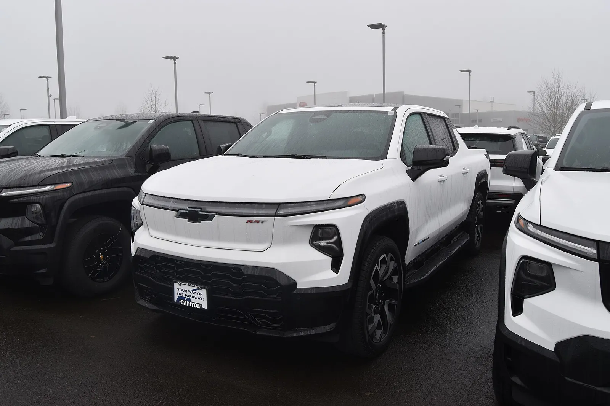
▲ 쉐보레 실버라도 EV(파일 설명 기준 2024년형 RST, 미국 오리건주 딜러 촬영). 3분기 1,655대로 전년 3,940대 대비 -58.0%. 실버라도 전체(가솔린·디젤 포함)는 146,639대로 +2.7%였다 ⓒ Wlb5V (Wikimedia Commons, CC BY-SA 4.0)
2. 전기차 25,473대 — 모델별로 어디서 빠졌나
GM 판매표에서 전기차로 확인되는 11개 줄을 모두 모으면 3분기 25,473대다. 전년은 66,501대였고 감소율은 -61.7%다. 전기차가 총판매에서 차지하는 비중은 3.80%(전년 9.36%)다. 이 합계는 카스쿱스·GM 오소리티 보도의 25,473대와 정확히 일치한다.
| 모델 | 2026 3분기 | 2025 3분기 | 증감률 | 증감 대수 |
|---|---|---|---|---|
| 쉐보레 이쿼녹스 EV | 1,905대 | 25,085대 | -92.4% | -23,180대 |
| 쉐보레 블레이저 EV | 1,261대 | 8,089대 | -84.4% | -6,828대 |
| GMC 허머 EV(픽업·SUV) | 1,423대 | 5,246대 | -72.9% | -3,823대 |
| 캐딜락 리릭 | 3,617대 | 7,309대 | -50.5% | -3,692대 |
| 쉐보레 실버라도 EV | 1,655대 | 3,940대 | -58.0% | -2,285대 |
| GMC 시에라 EV | 1,661대 | 3,374대 | -50.8% | -1,713대 |
| 캐딜락 비스티크 | 2,587대 | 3,924대 | -34.1% | -1,337대 |
| 브라이트드롭 400/600 | 1,344대 | 2,384대 | -43.6% | -1,040대 |
| 캐딜락 에스컬레이드 IQ/IQL | 1,604대 | 2,264대 | -29.2% | -660대 |
| 캐딜락 옵티크 | 4,550대 | 4,886대 | -6.9% | -336대 |
| 쉐보레 볼트(신형) | 3,866대 | 0(판매표에 "-") | 산출 불가 | +3,866대 |
| 전기차 합계 | 25,473대 | 66,501대 | -61.7% | -41,028대 |
이쿼녹스 EV 한 모델이 전체 감소분 -41,028대 중 56.5%(-23,180대)를 차지한다. 판매표에는 볼트가 2025년 3분기 줄에 "-"로 적혀 있어 전년 분기 판매가 없는 신형이다. 볼트 3,866대를 빼고 기존 전기차 10종만 비교하면 21,607대 대 66,501대로 -67.5%까지 내려간다. 즉 볼트가 없었다면 낙폭은 더 컸다. 볼트는 GM 전기차의 15.2%를 차지하며, 이쿼녹스 EV(1,905대)의 두 배 가까이 팔렸다. 볼트 생산 조정 계획은 쉐보레 볼트 생산 축소 기사에서 다뤘다.
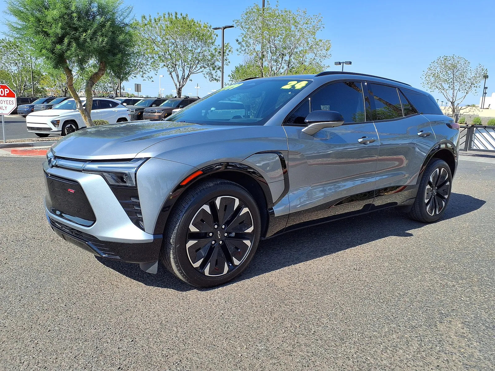
▲ 쉐보레 블레이저 EV(파일 설명 기준 RS, 미국 애리조나주 딜러 촬영). 3분기 1,261대로 전년 8,089대 대비 -84.4% ⓒ HJUdall (Wikimedia Commons, CC0)
📍 "블레이저 EV 5,199대"는 오보로 보인다 — 공식 표는 1,261대
일부 요약 기사(일렉트렉 등)에는 블레이저 EV가 5,199대(-84%)로 적혀 있지만 GM 판매표에서 5,199대는 가솔린 블레이저(전년 11,047대, -52.9%)이고 블레이저 EV는 1,261대(전년 8,089대, -84.4%)다. 검증 방법은 간단하다. 5,199대를 쓰면 전기차 11개 줄의 합이 29,411대로 GM이 밝힌 25,473대를 넘지만, 1,261대를 쓰면 25,473대로 정확히 맞는다. 또 GM 오소리티 요약 한 곳에는 이쿼녹스 EV가 1,705대로도 적혀 있으나 공식 표는 1,905대다. 캐딜락 합계도 보도마다 32,650대와 32,560대로 갈리는데 공식 표와 네 브랜드 합계가 맞는 값은 32,560대다. 이 글의 수치는 모두 GM 판매표 PDF를 직접 읽은 값이다.
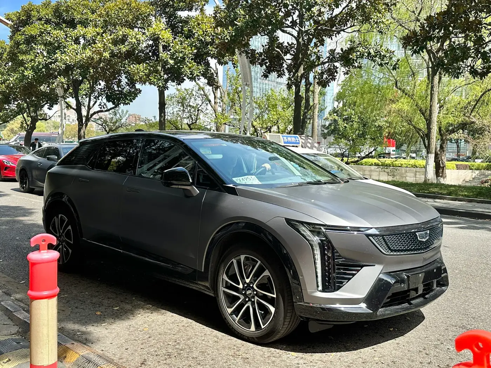
▲ 캐딜락 옵티크(촬영 장소는 확인하지 않았으며 미국 판매 사양과 다를 수 있다). 캐딜락 전기차 4종(리릭·옵티크·비스티크·에스컬레이드 IQ)의 3분기 합계는 12,358대로 GM 전기차의 48.5% ⓒ JustAnotherCarDesigner (Wikimedia Commons, CC0)
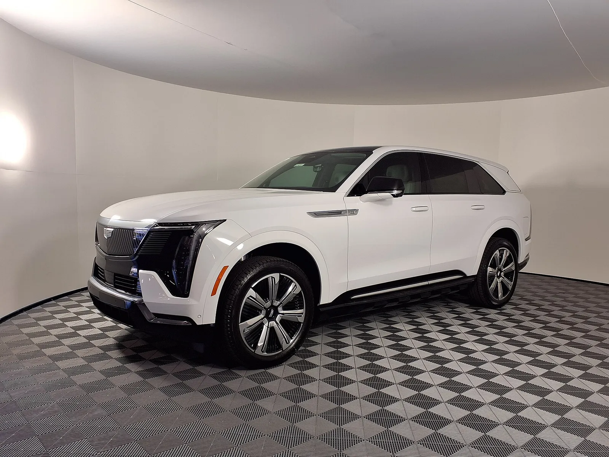
▲ 캐딜락 에스컬레이드 IQ(파일 설명 기준 2025년형 럭셔리, 미국 애리조나주 딜러 촬영). 3분기 1,604대로 전년 2,264대 대비 -29.2%이며 전기차 11개 줄 중 감소율이 작은 편에 속한다. 모델 소개는 에스컬레이드 IQ 시승 기사에서 다뤘다. ⓒ HJUdall (Wikimedia Commons, CC0)
3. GM 감소분 분해 — 전기차 빼면 오히려 늘었다
GM의 총판매를 전기차와 비전기차로 나누면 "GM은 판매가 줄었다"는 문장이 얼마나 전기차에 몰려 있는지 드러난다.
| 구분 | 2026 3분기 | 2025 3분기 | 증감 | 계산·비고 |
|---|---|---|---|---|
| GM 총판매 | 670,974대 | 710,347대 | -39,373대(-5.5%) | 공식 표 |
| 전기차(11줄 합) | 25,473대 | 66,501대 | -41,028대(-61.7%) | 모델별 합산 |
| 비전기차(총판매 - 전기차) | 645,501대 | 643,846대 | +1,655대(+0.3%) | 670,974-25,473 / 710,347-66,501 |
| 캐딜락 전기차 4종 | 12,358대 | 18,383대 | -6,025대(-32.8%) | 캐딜락 브랜드의 38.0%(전년 39.5%) |
| 쉐보레 전기차(볼트 포함) | 10,031대 | 39,498대 | -29,467대(-74.6%) | 이쿼녹스·블레이저·실버라도 EV·브라이트드롭·볼트 |
| GMC 전기차 2종 | 3,084대 | 8,620대 | -5,536대(-64.2%) | 허머 EV·시에라 EV |
| 1~9월 전기차(11줄 합) | 82,152대 | 144,668대 | -62,516대(-43.2%) | 비중 4.1%(전년 6.7%) |
전기차 -41,028대는 총 감소분 -39,373대보다 크다. 비전기차가 +1,655대로 일부를 메운 결과다. 이는 GM이 "판매량이 많은 차종은 전년 수준"이라고 한 설명과 일치한다. 다만 전년 3분기는 미국 연방 7,500달러 전기차 세액공제가 2025년 9월 말 종료되기 직전 수요가 몰린 분기라는 점(카스쿱스 등 보도)을 감안해야 한다. 3분기 전기차 66,501대는 GM 분기 기록이라는 보도가 있어 비교 기준이 유난히 높다. 반면 1~9월 누적 전기차는 -43.2%로 3분기 단독(-61.7%)보다 완만하다. 3분기가 올해 전기차 판매의 바닥인지는 4분기 숫자를 봐야 하며, 이 글에서는 판단하지 않는다.
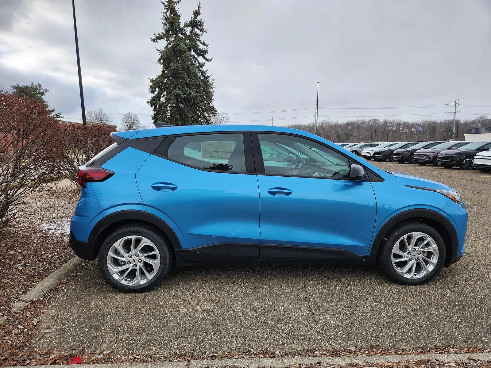
▲ 쉐보레 볼트(위키미디어 파일 설명 기준 2027년형, 미국 미시간주 노바이 보관 부지 촬영, 사진의 외형이 구형과 다르게 보일 수 있어 연식은 파일 설명에 따름, 위키미디어 원본 파일의 설명·분류(2세대 볼트)와 촬영 시각 2026년 3월 17일을 확인함). 3분기 3,866대로 GM 전기차 중 캐딜락 옵티크(4,550대)에 이은 2위 판매량이며 이쿼녹스 EV(1,905대)·블레이저 EV(1,261대)보다 많았다 ⓒ DontCallMeLateForDinner (Wikimedia Commons, CC BY-SA 4.0)
🔍 독자가 기억할 판정 기준
"GM 전기차 판매 급락"은 사실이며 낙폭은 -61.7%(볼트 제외 -67.5%)다. 다만 GM의 총판매 -5.5%는 전기차 감소가 전부를 설명하고 비전기차는 +0.3%였다. 모델별 수치를 인용할 때는 매체 요약이 아니라 GM 판매표를 기준으로 삼는 것이 안전하다(블레이저 EV 1,261대, 이쿼녹스 EV 1,905대). 한편 전년 3분기는 세액공제 종료 직전 수요가 몰린 비교 기준이라 낙폭이 구조적 수요 감소만을 뜻하지는 않는다.
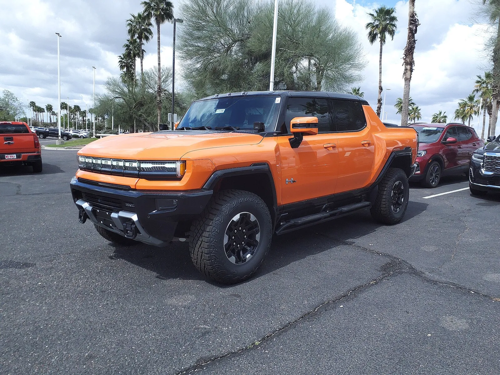
▲ GMC 허머 EV(파일 설명 기준 2024년형 2X 픽업, 미국 애리조나주 딜러 촬영). 3분기 1,423대로 전년 5,246대 대비 -72.9%. GMC 전기차 2종(허머 EV·시에라 EV)의 3분기 합계는 3,084대다. ⓒ HJUdall (Wikimedia Commons, CC0)
3-1. 낙폭 -61.7%에는 기준 분기가 높았던 효과가 섞여 있다 — 카프리즘 계산
GM 판매표에는 1~9월 누계도 있어, 3분기를 빼면 상반기(1~6월)를 역산할 수 있다. 상반기 전기차는 올해 82,152 - 25,473 = 56,679대, 작년 144,668 - 66,501 = 78,167대다. 분기 평균으로 환산하면 올해 약 28,340대, 작년 약 39,084대다.
| 구간 | 대수 | 분기 평균 | 비교 |
|---|---|---|---|
| 2025년 상반기 | 78,167대 | 약 39,084대 | 기준 |
| 2025년 3분기 | 66,501대 | 66,501대 | 작년 상반기 분기 평균 대비 +70.2% |
| 2026년 상반기 | 56,679대 | 약 28,340대 | 전년 상반기 대비 -27.5% |
| 2026년 3분기 | 25,473대 | 25,473대 | 올해 상반기 분기 평균 대비 -10.1%, 전년 3분기 대비 -61.7% |
두 가지가 읽힌다. 첫째, 전년 대비 낙폭이 상반기 -27.5%에서 3분기 -61.7%로 커진 데는 기준 분기(2025년 3분기)가 작년 상반기 분기 평균보다 70% 높았다는 효과가 크다. 둘째, 그렇다고 올해 3분기가 양호했다는 뜻은 아니다. 신형 볼트 3,866대가 더해졌는데도 3분기 25,473대는 올해 상반기 분기 평균(약 28,340대)보다 10.1% 낮다. 볼트를 빼면 21,607대로 약 23.8% 낮다. 다만 상반기 합계에 볼트가 얼마나 들어 있는지는 판매표만으로 알 수 없어, 이 볼트 제외 비교는 상반기를 볼트 포함 값 그대로 쓴 대략치다.
| 가정한 선수요 비율 p | 조정된 전년 기준(66,501 x (1-p)) | 25,473대의 증감률 | 볼트 제외 21,607대의 증감률 |
|---|---|---|---|
| 0%(공식 표 그대로) | 66,501대 | -61.7% | -67.5% |
| 10% | 59,851대 | -57.4% | -63.9% |
| 20% | 53,201대 | -52.1% | -59.4% |
| 30% | 46,551대 | -45.3% | -53.6% |
선수요가 30%였다고 넉넉하게 가정해도 전기차는 -45%로 거의 절반이 빠진 것이다. 즉 "세액공제 종료 직전 기저효과"만으로는 낙폭이 설명되지 않는다. p 값은 공식 자료에 없어 독자가 직접 넣어 보는 가정이며 카프리즘이 추정한 수치가 아니다. 미국 전기차 시장 전반은 세액공제 종료 후 미국 전기차 시장 기사에서 정리했다.
4. 스텔란티스 324,277대 — 공식 판매 차트로 푼 보합
스텔란티스(FCA US)는 10월 1일 "Stellantis Reports Q3 Sales" 보도자료에서 3분기 판매가 324,277대로 전년과 비슷하고, 1~9월은 3% 증가했다고 밝혔다. 첨부된 "Q3 2026 U.S. Sales Chart"에는 모델별 판매가 있다. 전년 3분기는 324,825대이므로 차이는 -548대(-0.17%)다. 이 보합 한 줄은 브랜드별로 풀면 전혀 다른 그림이다.
| 브랜드 | 2026 3분기 | 2025 3분기 | 증감 대수 | 증감률 | 총판매 비중(2026) |
|---|---|---|---|---|---|
| Ram | 134,072대 | 103,717대 | +30,355대 | +29% | 41.3%(전년 31.9%) |
| 지프 | 128,542대 | 160,564대 | -32,022대 | -20% | 39.6%(전년 49.4%) |
| 크라이슬러 | 34,494대 | 32,489대 | +2,005대 | +6% | 10.6% |
| 닷지 | 26,546대 | 26,120대 | +426대 | +2% | 8.2% |
| 알파로메오 | 569대 | 1,614대 | -1,045대 | -65% | 0.2% |
| 피아트 | 54대 | 321대 | -267대 | -83% | 0.0% |
| 스텔란티스 US 합계 | 324,277대 | 324,825대 | -548대 | 0% | 1~9월 958,463대(+3%) |
브랜드별 증감을 모두 더하면 +30,355 - 32,022 + 2,005 + 426 - 1,045 - 267 = -548대로 합계와 정확히 맞는다. 전년 3분기에는 지프가 총판매의 절반 가까이(49.4%)를 차지했지만, 올해는 Ram이 지프를 넘어 41.3%로 올라섰다. 매체들이 "Ram이 지프를 왕좌에서 끌어내렸다"고 쓴 것은 이 순서 변화를 가리킨다. 한 가지 눈에 띄는 점은 스텔란티스 보도자료의 지프 항목이 브랜드 합계(-20%) 없이 랭글러 +5%와 체로키 하이브리드 소매 판매 증가만 소개한다는 사실이다. 지프 합계 감소율은 첨부 차트에서만 확인된다.

▲ 램 1500(파일 설명 기준 2025년형 래러미 크루캡). 3분기 경량 픽업 램 1500은 76,650대로 전년 44,349대 대비 +73%이며 스텔란티스 총판매의 23.6%를 차지한다 ⓒ Deathpallie325 (Wikimedia Commons, CC BY-SA 4.0)
5. 스텔란티스 모델별 — 누가 늘리고 누가 깎았나
| 모델 | 2026 3분기 | 2025 3분기 | 증감 대수 | 증감률 |
|---|---|---|---|---|
| Ram 1500(경량 픽업) | 76,650대 | 44,349대 | +32,301대 | +73% |
| Ram HD 픽업 | 41,107대 | 43,717대 | -2,610대 | -6% |
| 지프 체로키 하이브리드 | 10,344대 | 131대 | +10,213대 | 출시 초기 대비 급증 |
| 지프 랭글러 | 44,757대 | 42,450대 | +2,307대 | +5% |
| 지프 그랜드 체로키 | 38,027대 | 54,553대 | -16,526대 | -30% |
| 지프 컴패스 | 10,811대 | 28,086대 | -17,275대 | -62% |
| 지프 왜고니어·그랜드 왜고니어 | 12,495대 | 17,900대 | -5,405대 | -30% |
| 지프 글래디에이터 | 11,911대 | 13,113대 | -1,202대 | -9% |
| 크라이슬러 퍼시피카 | 34,491대 | 32,417대 | +2,074대 | +6% |
| 닷지 듀랑고 | 22,755대 | 20,018대 | +2,737대 | +14% |
지프 -32,022대에서 체로키 하이브리드 +10,213대를 빼면, 나머지 지프 모델은 합계 -42,235대(-26.3%)였다. 컴패스(-17,275대)와 그랜드 체로키(-16,526대) 두 모델이 그 80%다. 스텔란티스는 이 두 모델 감소의 이유를 보도자료에서 밝히지 않았고, 카프리즘도 원인을 확인하지 못했다. 컴패스는 3만 달러 미만 유일한 스텔란티스 모델이라는 보도가 있어 7장의 신차 전략과 맞물려 눈에 띈다. 체로키 하이브리드는 1~9월 20,914대 중 49.5%(10,344대)가 3분기 판매다.
Ram 1500에서는 숫자 두 개가 다르게 읽힌다. 스텔란티스 보도자료는 소매 증가 목록에서 Ram 1500 소매 판매가 +42%라고 밝혔고 같은 보도자료의 총판매는 +73%다. 총판매에는 렌터·정부·상업용 등 플릿 판매가 들어가므로, 총판매 증가율이 소매 증가율보다 높다는 것은 플릿 등 비소매 채널이 더 크게 늘었을 가능성을 시사한다. 다만 소매 판매의 절대 대수는 공개되지 않아 얼마나 늘었는지는 확인하지 못했다(추정).
Ram 브랜드 합계를 모델로 풀어 보면 구조가 더 선명하다. 경량 Ram 1500(76,650대)과 Ram HD(41,107대)를 더하면 117,757대이고, Ram 브랜드 134,072대에서 이를 뺀 나머지 16,315대는 같은 차트의 프로마스터 밴 16,314대와 1대 차이다(1대 차이의 원인은 차트에서 확인하지 못했다). Ram 1500의 증가분 +32,301대는 Ram 브랜드 증가분 +30,355대의 106%로, 나머지 Ram 모델이 합쳐서 -1,946대를 깎은 계산이다. 3분기 Ram 증가는 사실상 Ram 1500 한 모델이 만들었다.
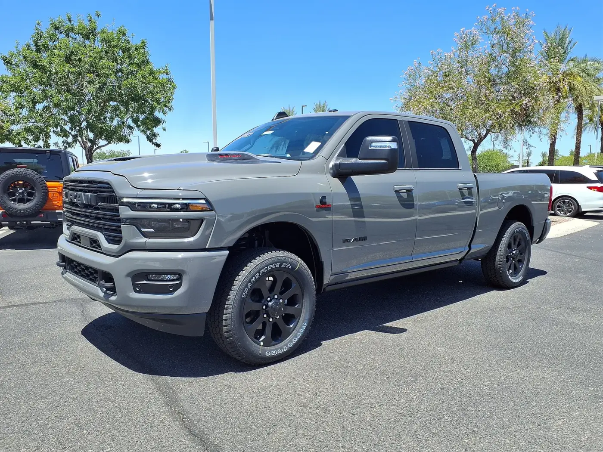
▲ 램 2500(파일 설명 기준 2025년형 라라미, 미국 애리조나주 딜러 촬영). 램 HD 픽업은 3분기 41,107대로 전년 43,717대 대비 -6%였다. ⓒ HJUdall (Wikimedia Commons, CC0)
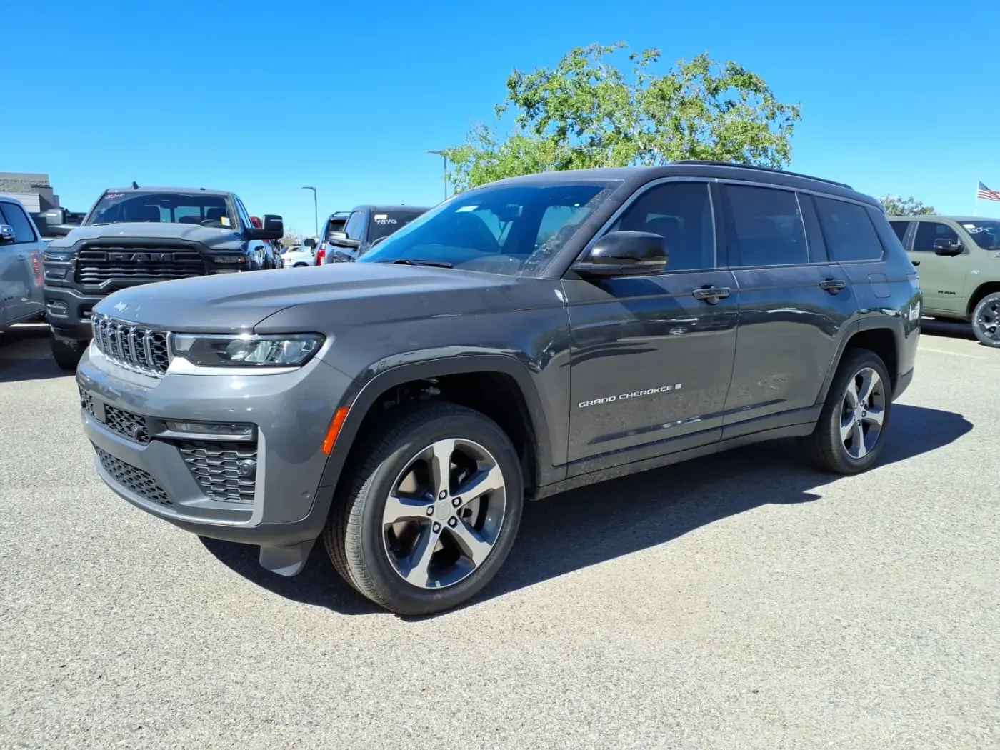
▲ 지프 그랜드 체로키 L(파일 설명 기준 2026년형 리미티드, 미국 애리조나주 딜러 촬영). 그랜드 체로키는 3분기 38,027대로 전년 54,553대 대비 -30%였다. 한국 출시 정보는 그랜드 체로키 L 한국 출시 기사에서 다뤘다. ⓒ HJUdall (Wikimedia Commons, CC0)
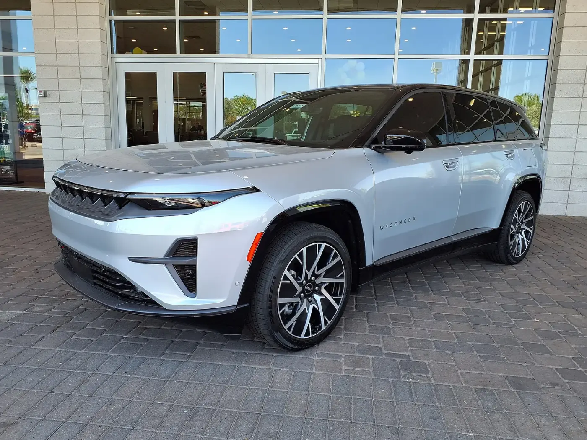
▲ 지프 왜고니어 S(파일 설명 기준 리미티드, 미국 애리조나주 딜러 촬영). 3분기 146대로 전년 4,163대 대비 -96%, 1~9월 519대(-95%) ⓒ HJUdall (Wikimedia Commons, CC0)
| 모델 | 2026 3분기 | 2025 3분기 | 증감률 |
|---|---|---|---|
| 지프 왜고니어 S | 146대 | 4,163대 | -96% |
| 닷지 차저 데이토나(BEV) | 233대 | 2,776대 | -92% |
| 피아트 500e | 52대 | 288대 | -82% |
| 지프 리콘 | 35대 | 14대 | +150% |
| 합계(프로마스터 EV 제외) | 466대 | 7,241대 | -93.6% |
| 총판매 대비 비중 | 0.14% | 2.23% | - |
위 합계는 판매 차트에서 전기차임이 명확한 4종만 합친 하한값이다. 램 프로마스터는 전기 모델(프로마스터 EV)이 따로 표기되지 않고 프로마스터 밴 16,314대에 합산돼 있어 스텔란티스 전체 전기차 대수는 확인하지 못했다. 닷지 차저는 같은 차트에서 내연 모델(ICE) 3,446대 대 전기 모델 233대로 약 14.8 대 1이며, 차저 합계는 전년 3,014대에서 3,679대로 +22%였다. 즉 차저는 전기에서 빠지고 내연이 채웠다. 스텔란티스는 9월 10일 필로사 CEO의 발언으로 2030년 미국 50% 전기차 목표를 철회하고 멀티 에너지 전략으로 돌아섰다(필로사 전기차 전략 재조정 기사 참고). 판매 차트의 이 숫자는 그 방향 전환이 이미 판매 구성에 나타났음을 보여 준다.
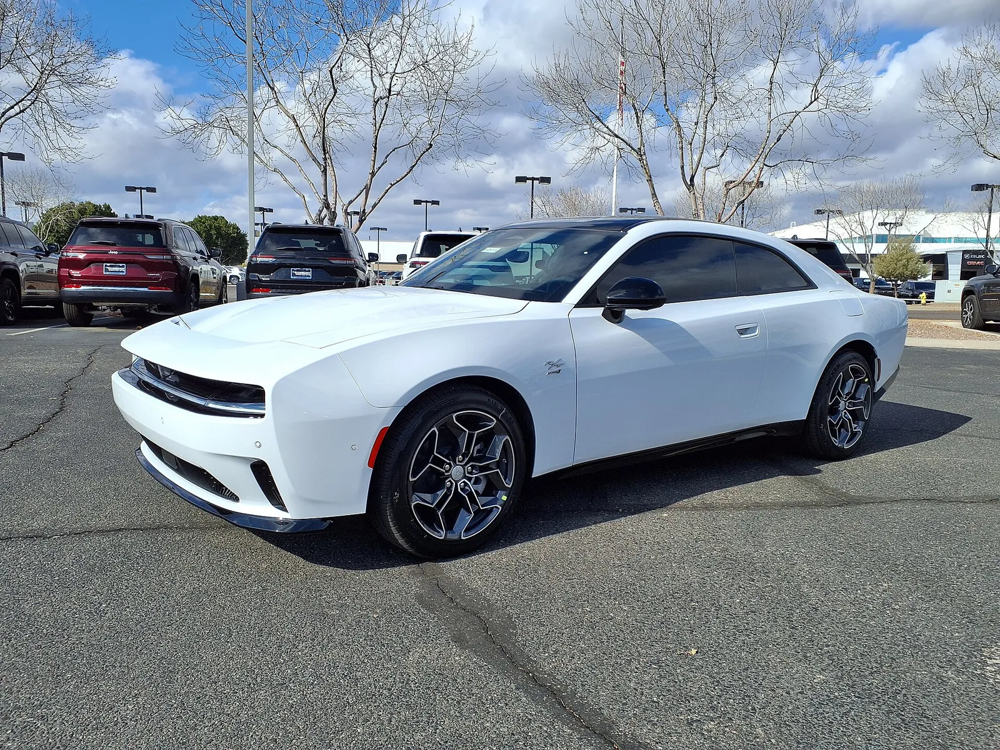
▲ 닷지 차저 데이토나(파일 설명 기준 2024년형 R/T, 미국 애리조나주 딜러 촬영). 3분기 전기 모델 233대로 전년 2,776대 대비 -92%, 같은 차트의 내연 모델은 3,446대였다. ⓒ HJUdall (Wikimedia Commons, CC0)
6. 3사 비교표 — 포드·현대차그룹과 한 틀로 맞췄다
앞선 두 기사의 수치와 이번 공식 자료를 한 표로 모았다. 포드·현대차그룹 수치는 각각 포드 3분기 판매 기사와 현대차·기아 3분기 실적 기사에서 확인한 값을 그대로 가져왔다.
| 회사 | 2026 3분기 | 증감률 | 증감 대수 | 전기차 3분기(전년) | 전기차 비중(전년) |
|---|---|---|---|---|---|
| GM | 670,974대 | -5.5% | -39,373대 | 25,473대(66,501대) | 3.8%(9.4%) |
| 스텔란티스 | 324,277대 | -0.2% | -548대 | 466대 이상(7,241대) | 0.14% 이상(2.2%) |
| 포드(링컨 포함) | 509,764대 | -6.6% | -35,758대 | 6,047대(30,612대) | 1.2%(5.6%) |
| 현대차그룹(제네시스 포함) | 506,200대(비공식 집계, 공식 발표는 현대+기아 483,555대, 제네시스 제외) | +5.4%(비공식 집계 기준) | 약 +2만 6천대(역산) | 확인 못 함 | 확인 못 함 |
| GM·스텔란티스·포드 합계 | 1,505,015대 | -4.8% | -75,679대 | 31,986대 이상(104,354대) | 2.1% 이상(6.6%) |
계산 방식은 다음과 같다. 세 회사 합계는 670,974 + 324,277 + 509,764 = 1,505,015대, 전년은 710,347 + 324,825 + 545,522 = 1,580,694대로 -4.8%다. 전기차 합계 31,986대(전년 104,354대)는 -69.3%이며 스텔란티스 값이 하한이라 실제 감소율은 이보다 약간 작을 수 있다. 포드는 앞선 기사에서 포드 보도자료 모델별 표로 계산한 마하-E·F-150 라이트닝·E-트랜짓 합계 6,047대(전년 30,612대)를 가져왔다. 현대차그룹 전기차는 현대차·기아 발표문에서 전체 대수를 확인하지 못했다. 현대차그룹 행의 506,200대는 비공식 집계이고 공식 발표는 제네시스를 뺀 현대+기아 483,555대이므로, 합계 행에는 현대차그룹을 넣지 않았다.
세 회사의 공통점은 전기차 비중이 1년 새 크게 낮아졌다는 점이다. 비중 하락 폭은 GM(9.4%에서 3.8%)보다 스텔란티스(2.2%에서 0.14% 이상)가 더 극적이지만 스텔란티스는 전기차 판매 규모 자체가 원래 작았다는 점을 함께 봐야 한다. GM의 전기차 25,473대는 세 회사 전기차 합계의 약 80%(25,473 ÷ 31,986)다. 이 흐름은 트럼프 행정부의 연비규제 완화 기사에서 다룬 새 CAFE 기준안(2031년 갤런당 34.5마일)이 전기차 판매 압박을 낮추는 방향이라는 설명과 맞닿아 있으나, 3분기 판매 감소가 규제 완화 때문이라고 단정할 근거는 없다. GM이 전기차 관련으로 반영한 비용은 GM 60억 달러 EV 관련 비용 기사에서 다뤘다.
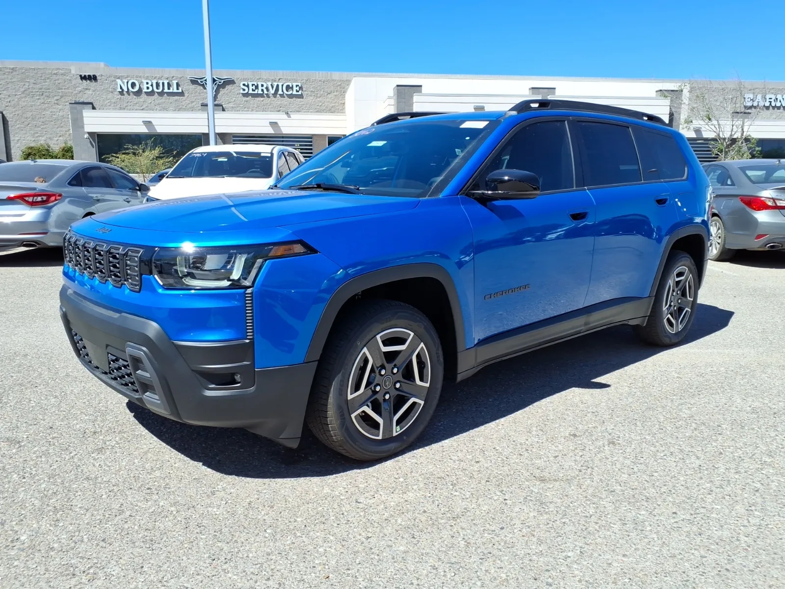
▲ 지프 체로키(파일 설명 기준 2026년형 리미티드, 미국 애리조나주 딜러 촬영, 파워트레인은 사진으로 확인하지 못함). 체로키 하이브리드는 3분기 10,344대로 전년 131대에서 급증했다 ⓒ HJUdall (Wikimedia Commons, CC0)
7. 스텔란티스 5년 북미 계획 — "4만 달러 미만 7종"의 의미
글로벌이코노믹(10월 4일 보도)은 스텔란티스가 앞으로 5년간 북미에 신차 11종을 내놓고, 그중 4만 달러 미만이 7종, 3만 달러 미만이 2종이라고 전했다. 이 5년 계획은 5월 21일 투자자의 날(FaSTLAne 2030)에서 발표된 내용이며, 스텔란티스 공식 보도자료와 SEC 제출 문서(6-K 첨부)로 직접 확인한 것은 다음과 같다. 북미는 "11종의 완전 신차와 35% 많은 물량으로 시장 커버리지를 50% 확대"하고 "4만 달러 미만 신제품 7종과 3만 달러 미만 2종"을 내놓는다는 목표이며, 매출 25% 성장과 조정영업이익률 8~10%를 겨냥하고, 브랜드·제품 투자 360억 유로의 60%를 북미에 배정한다. 이 공식 문장에는 모델명이 없고, "3만 달러 미만 2종"이 "4만 달러 미만 7종"에 포함되는지도 밝히지 않는다(The Drive는 합쳐서 9종으로 전한다). 3만 달러 미만 2종은 매체 보도 기준으로 지프 컴패스와 램 램페이지(소형 픽업)로 읽히지만, 컴패스가 신차 11종에 포함되는지는 확인하지 못했다. KBB 보도에 따르면 이 계획은 "FaSTLAne 2030" 전략의 일부로 램(다코타·램페이지·램차저), 지프(리콘 가솔린형·랭글러 기반 스크램블러·글래디에이터 풀체인지), 크라이슬러(에어플로·애로·애로 크로스), 닷지(GLH 핫해치·코퍼헤드 쿠페)로 구성된다. Wards는 이 전략의 발표 시점을 2026년 5월 투자자의 날로 전했다. 글로벌이코노믹이 인용한 EREV 사양(배터리 69.7kWh, 3.6L V6 펜타스타, 647마력)과 램 다코타의 2027년 생산·2028년형 출시는 해당 매체 보도 기준이며 스텔란티스 원문으로 직접 확인하지는 못했다.
| 항목 | 내용 | 3분기 판매와 연결해 볼 점 |
|---|---|---|
| 신차 수 | 5년간 11종(공식 확인) | 3분기 판매 보합을 만든 Ram 1500·체로키 하이브리드는 기존 판매 모델이다 |
| 4만 달러 미만 | 7종(공식 확인, 3만 달러 미만 2종 포함 여부는 공식 문장에 없음) | 컴패스 -62%(10,811대)가 저가 라인의 현재 모습이다 |
| 3만 달러 미만 | 2종(공식 확인, 모델명은 매체 보도상 컴패스·램페이지로 읽힘, 신차 11종에 컴패스 포함 여부는 확인 못 함) | 컴패스는 3분기 17,275대 감소 |
| 램 다코타(중형 픽업) | 2027년 생산, 2028년형 출시(글로벌이코노믹 기준) | Ram 1500이 +73%로 픽업 수요는 확인됐다 |
| EREV | 69.7kWh 배터리·3.6L V6, 647마력(글로벌이코노믹 기준) | 왜고니어 S 146대 등 전기 모델은 부진 |
스텔란티스의 현재 방향은 판매가 잘 되는 내연·하이브리드 픽업과 SUV에서 이익을 내고, 저가 신차로 저변을 넓히며, 전기차는 EREV 등 중간 단계로 가져가는 것이다. 필로사 CEO의 전략 재조정은 앞선 기사에서 정리했다. 이번 3분기 판매는 그 방향이 숫자에 나타난 분기 실적이다. 레인지 익스텐더 모델의 지연 배경은 램·지프 레인지 익스텐더 지연 기사를 참고할 수 있다. 다만 3분기 수치만으로 이 전략의 성패를 판단할 수는 없다. 지프 감소(-20%)의 원인이 확인되지 않았고, 신차 11종이 실제 판매에 기여하기까지는 시간이 걸린다.
8. 확인한 것과 확인하지 못한 것
| 항목 | 상태 | 근거 |
|---|---|---|
| GM 3분기 총판매 670,974대, 모델별 표 | 확인 | GM 뉴스룸 보도자료·판매표 PDF 직접 열람 |
| 스텔란티스 3분기 324,277대, 모델별 표 | 확인 | 스텔란티스 북미 미디어 사이트 보도자료·판매 차트 PDF 직접 열람 |
| GM 전기차 합계 25,473대 | 확인(계산) | 판매표 11줄 합산이 보도 수치와 일치 |
| 블레이저 EV 5,199대 보도 | 오보로 판단 | 공식 표에서 5,199대는 가솔린 블레이저 |
| 스텔란티스 전체 전기차 대수 | 확인 못 함 | 프로마스터 EV가 밴 합계에 포함 |
| 지프·컴패스 감소 원인 | 확인 못 함 | 보도자료에 설명 없음 |
| Ram 1500 소매 판매 절대 대수 | 확인 못 함 | 증가율(+42%)만 공개 |
| 5개년 계획 11종·7종·2종, 투자 배정 | 확인 | 스텔란티스 투자자의 날 보도자료·SEC 6-K 첨부 직접 열람(모델명은 없음) |
| 5개년 계획 모델명, EREV 사양, 다코타 일정 | 매체 보도 기준 | 글로벌이코노믹·KBB·Wards 등, 공식 보도자료에는 없어 확인 못 함 |
| 현대차그룹 전기차 대수·시장 전체 판매 | 확인 못 함 | 발표문에 없음 |
자주 묻는 질문
Q. 블레이저 EV는 1,261대인가 5,199대인가? GM 판매표 PDF 기준 1,261대다. 5,199대는 같은 표의 가솔린 블레이저 줄이다. 전기차 11줄 합계가 GM이 밝힌 25,473대와 맞는 값은 1,261대뿐이다.
Q. GM 판매가 줄었으니 GM이 부진한 것인가? 총판매는 -5.5%지만 전기차를 뺀 판매는 +0.3%다. 전기차 비중이 3.8%라 총판매 감소 대부분이 전기차에서 나왔다. 다만 GM이 보도자료에서 말한 "판매량이 많은 차종은 전년 수준"은 회사 설명이며, 모델별 증감은 판매표로 따로 봐야 한다.
Q. Ram이 지프를 앞선 것은 소매 수요가 늘었다는 뜻인가? 알 수 없다. 이 글의 수치는 총판매이고 플릿·상업용이 포함된다. 소매·플릿 구분 대수는 공개되지 않았다.
Q. 스텔란티스의 5년 신차는 한국에도 오는가? 공식 문장은 북미 계획이며 한국 출시 여부는 언급이 없어 확인하지 못했다. 현재 한국 출시 지프 모델은 위 그랜드 체로키 L 기사 등을 참고하면 된다.
다음 관전 포인트는 세 가지다. 첫째, 4분기부터 딜러에 도착하는 2027년형 신형 쉐보레 실버라도·GMC 시에라(GM 보도자료 기준)가 GM 비전기 판매를 얼마나 끌어올리는지다. 둘째, 스텔란티스 체로키 하이브리드가 지프의 감소분을 얼마나 메우는지다. 셋째, 3분기 전기차 급락이 세액공제 종료 직후의 일시적 충격인지 정착된 수준인지는 4분기 판매로 확인해야 한다.
9. 요약
GM 전기차 판매 급락은 3분기 사실이었다. GM 공식 판매표 기준 전기차는 25,473대(-61.7%)로 총판매 670,974대(-5.5%)의 3.8%다. 이쿼녹스 EV는 1,905대(-92.4%)로 전기차 감소분의 56%를 차지했고, 블레이저 EV는 보도(5,199대)와 달리 공식 표에서 1,261대다. 전기차를 뺀 GM 판매는 +0.3%였다.
스텔란티스의 "보합"(324,277대, -548대)은 Ram +30,355대와 지프 -32,022대의 상쇄였다. Ram 1500은 76,650대(+73%), 체로키 하이브리드는 10,344대가 새로 얹혔고, 컴패스(-62%)와 그랜드 체로키(-30%)가 줄었다. 공식 차트에서 구분되는 전기차 4종은 466대(-93.6%)다. 5년 계획의 수치(신차 11종, 4만 달러 미만 7종, 3만 달러 미만 2종)는 스텔란티스 공식 보도자료로 확인했고, 모델명과 EREV 사양은 매체 보도 기준이다.
GM·스텔란티스·포드를 합치면 1,505,015대(-4.8%), 전기차는 31,986대 이상(-69.3%)이다. 현대차그룹은 +5.4%였다. 전기차 비중이 줄어든 점은 공통이지만 GM의 비전기 판매가 늘었다는 사실과 스텔란티스 지프 감소 원인이 미확인이라는 점을 함께 봐야 한다. 관련 맥락은 볼트 생산 축소·스텔란티스 전략 재조정·CAFE 완화 기사를 참고하면 된다.